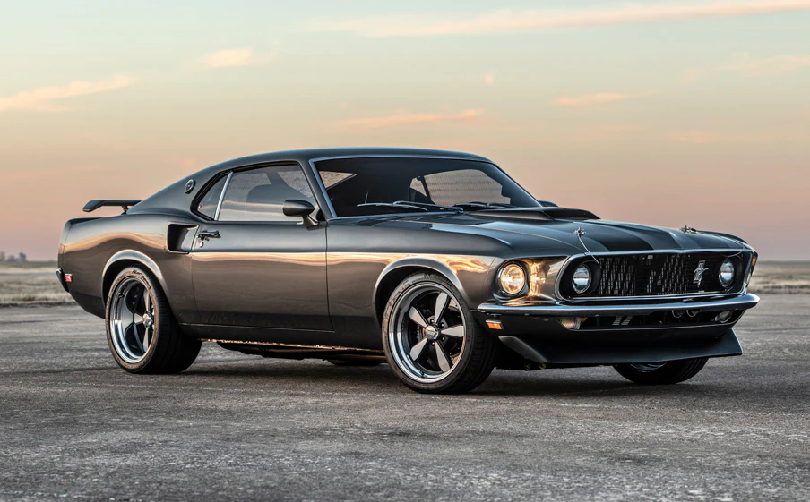

Early Days
Ever since I was a child, I've been fascinated by cars. The roar of the engine, the sleek design, and the sheer power they command on the road captivated me. Whether it's the classic lines of a vintage muscle car or the cutting-edge technology of modern supercars, every vehicle tells a unique story.
Learning the Mechanics
"The car is the closest thing we will ever create to something that is alive." - Sir William Lyons
One of my earliest memories is watching Formula 1 races with my father. The speed, precision, and skill required to navigate those powerful machines left a lasting impression on me. It wasn't just about getting from point A to point B—it was about the journey, the experience, and the connection between driver and machine.
As I grew older, my interest in cars only deepened. I started learning about how engines work, the different types of transmissions, and the various technologies that make today's cars safer and more efficient. This passion also led me to explore the automotive industry, understanding the impact of innovation and design on car manufacturing.
Favorite Classic Car
I have always loved this 1969 Mustang. Ever since I was little I have always desired to own this car one day and restore and modify it. In my eyes it is perfection. Naturally aspirated v8, timeless look, and minimal interior (which I prefer).
Looking Ahead
Looking ahead, I hope to combine my passion for cars with my skills in coding and technology. Whether it's working on autonomous vehicles, improving the efficiency of electric cars, or even starting my own car restoration business, I know that cars will always be a central part of my life.
- Autonomous vehicles
- Electric car technology
- Car restoration business